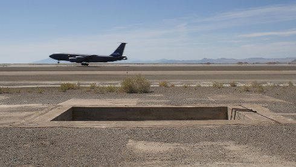

{kind=link}
Loading Pit

Lukas Marxt
|
AT,
DE 2019
|
Tuesday 15 oct | 8.30 pm | Werkstattkino | short film
night
In this film which is supported by The Center for Land Use Interpretation
and Sonic Acts, Lukas Marxt explores once more, what are the impacts of anthropogenic inhabitation, deploying a tactical usage of minimalist anticlimactic aesthetics and scrutinized framing of military ruins.
Resituating our perception of nuclear atomization, Marxt´s film navigates through shifting timescales, abducting the viewer to a dehumanized timeless dimension which is deranging and uncertain, just as the full scope of the nuclear isotope decay. (Margarida Mendes)
Lukas Marxt born 1983 in Styria. Studied geography and environmental system sciences in Graz, audio-visual design in Linz. He won numerous prizes with his short films. In Locarno in 2019 he showed his first feature film RALFS FARBEN in world premiere. The publication "From Light to Cold", Verlag für Moderne Kunst, about Lukas Marxt also appeared in 2019. |
Films Captive Horizon 2015 (11. UX) | Cape Ground 2016 | Circular Inscription 2016 | Imperial Valley (cultivated run-off) 2018 (13. UX) | Loading Pit 2019 | Ralfs Farben 2019 |